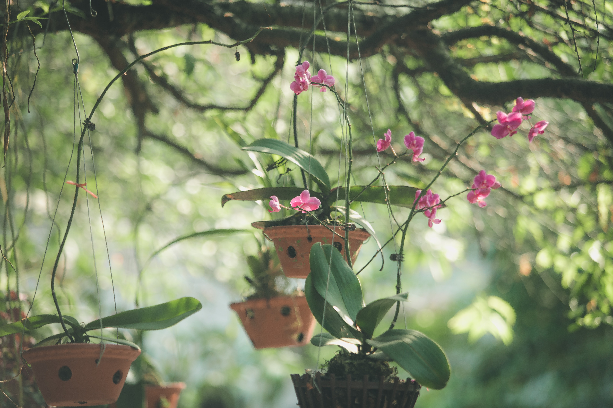

|

|
Bunga-Anggrek
- Aroma anggrek sering dianalisis oleh pembuat parfum (menggunakan teknologi headspace dan kromatografi gas-cair/spektrometri massa) untuk mengidentifikasi bahan kimia wewangian potensial.
- Penggunaan anggrek penting lainnya adalah budidaya mereka untuk menikmati bunga. Sebagian besar anggrek yang dibudidayakan adalah tropis atau subtropis, tetapi beberapa yang tumbuh di iklim yang lebih dingin dapat ditemukan di pasaran.
- Beberapa spesies anggrek saprofit dari kelompok Gastrodia menghasilkan umbi seperti kentang dan dikonsumsi sebagai makanan oleh penduduk asli di Australia dan dapat berhasil dibudidayakan, terutama Gastrodia sesamoides.
|